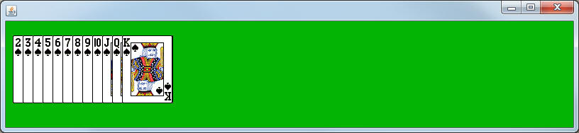
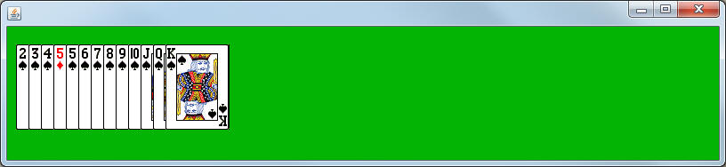
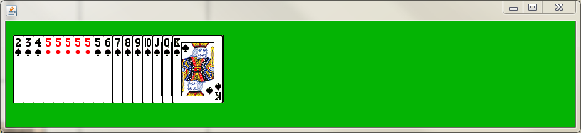
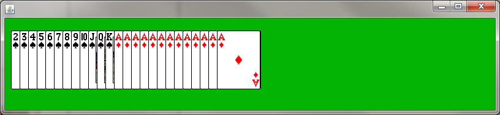

Create a class named CardInserterBoard, which is a subclass of CardBoard.
Override the loadCards method so that it only loads the 2 theough King of Spades. Since you don't have access to the ArrayList instance field, construct a local one, add all the cards to it, and then call the setCards method to make sure that the instance field is set.

Add the following method:
public void insertCard(FlipCard c)
The goal behind this method is to insert the parameter at a specific location as to keep the ArrayList in an increasing order. For example: If the parameter were the five of diamonds, the result would be the following:

How to accomplish this:
If you notice above, every card to the left of the new 5 is 'less than' the Five of Diamonds, and everything to the right is 'greater than'. Your job will be to find the index where that's true and add the card at that specific location.
The most important thing to remember is that FlipCard has a compareTo method that you wrote earlier. This will allow us to determine whether or not a card is 'greater than' or 'less than' the given card.
Create a variable to represent the location to insert and start it at 0. Then write a loop that will increment the index variable every time the card at that index is 'less than' the parameter card. Assuming that the list is already in some sort of order, the index should stop incrementing entirely once it finds the spot it's supposed to be.
After the loop has completed, insert the card at that location.
The last thing that the insertCard method should do is call arrangeCards to make sure that everything is in order.
public static void inserterRunner()
{
CardInserterBoard cs = new CardInserterBoard();
cs.setTitle("Card Inserter");
cs.launch();
}
To test out your program, override the onTimerTick method to construct a Five of Diamonds and then call the insertCard method with it.
Run the program and hit F1 to start the timer. If done properly, the result should look like the example below (it will add them pretty fast)..

Watch for IndexOutOfBounds
When dealing with arrays/ArrayLists you should always fear going out of bounds. Modify the onTimerTick method to add an Ace of Diamonds instead of the 5 and run it again. This time there are no cards in the list that are higher than the Ace, meaning if you add an Ace there is a chance of going out of bounds.
Run the program. If it runs, you've already taken card of the out of bounds issue. If it crashes you've got an infinite loop. Modify your code so that it stops when it reaches the end of the list.

For Turning in, replace the current onTimerTick method with the following:
public void onTimerTick()
{
String[] valChar = {"2","3","4","5","6","7","8","9","T","J","Q","K","A"};
String[] suitChar = {"D","C","H","S"};
int v = (int)(Math.random()*valChar.length);
int s = (int)(Math.random()*suitChar.length);
FlipCard rand = new FlipCard(valChar[v],suitChar[s]);
this.insertCard(rand);
}
Also replace your loadCards method so that it doesn't add any cards to the ArrayList before calling setCards. This will cause the board to start initially with no cards on the board.
When you run it, random cards should be generated and inserted into the list. Make sure that they're inserting in the proper order.